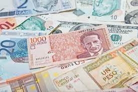

La moneda oficial de Colombia es el PESO, el cual se divide en 100 centavos. Colombia se posiciona como la cuarta economía más grande de América Latina, luego de Brasil, México y Argentina y en la clasificación internacional, se encuentra dentro de las 31 mayores del mundo.
Hace parte de los CIVETS (Colombia, Indonesia, Vietnam, Egipto, Turquía y Suráfrica), que lo conforman economías emergentes con alto potencial de desarrollo.
En 2012 entró en vigencia el Tratado de Libre Comercio entre Colombia y Estados Unidos. El acuerdo se suma a los ya 10 tratados vigentes, y a otros seis que se encuentran en negociación.
Colombia hace parte de organizaciones internacionales como Naciones Unidas, el Fondo Monetario Internacional, el Grupo Banco Mundial, el BID (Banco Interamericano de Desarrollo), Unasur, la OMC (Organización Mundial de Comercio), Mercosur, entre otras.
La economía colombiana se basa, fundamentalmente, en la producción de bienes primarios para la exportación, y en la producción de bienes de consumo para el mercado interno. Una de las actividades económicas más tradicionales es el cultivo de café, siendo uno de los mayores exportadores mundiales de este producto; ha sido parte central de la economía de Colombia desde principios del siglo XX y le ha valido reconocimiento internacional gracias a la calidad del grano; sin embargo, su importancia y su producción han disminuido significativamente en los últimos años.
La producción petrolífera es una de las más importantes del continente, Colombia es el cuarto productor de América latina y el sexto de todo el continente.
En cuanto a minerales, cabe destacar la explotación de carbón, y la producción y exportación de oro, esmeraldas, zafiros y diamantes.
En agricultura, ocupan un lugar importante la floricultura y los cultivos de banano, y en el sector industrial destacan los textiles, la industria automotriz, la química y la petroquímica.
AGRICULTURA
El café es el cultivo principal. Después de Brasil, Colombia es el tercer productor mundial y el primero en la producción de café suave. Se cultiva principalmente en las vertientes de las montañas entre los 914 y los 1.828 m de altitud, sobre todo en los departamentos de Caldas, Antioquia, Cundinamarca, Norte de Santander, Tolima y Santander.
Otros cultivos considerables son: el cacao, la caña de azúcar, arroz, plátano o banano, tabaco, algodón, yuca, palma africana, flores tropicales y semitropicales. Algunos cultivos menores están formados por cereales, verduras y una amplia variedad de frutas. También se cultivan plantas que producen pita, henequén y cáñamo, que se utilizan en la fabricación de cuerdas y costales.
PESCA Y SILVICULTURA
Privilegiado con dos mares y con cerca de dos mil especies de peces, Colombia posee una gran riqueza ictiológica (La ictiología es la rama dedicada al estudio de los peces).
En las aguas costeras y en muchos ríos y lagos de Colombia se encuentra una amplia variedad de peces, de los que destacan: trucha, tarpón, pez vela y atún.
En cuanto a la Silvicultura, cultivo y cuidado de los montes, se puede decir que e los bosques están localizados fundamentalmente en la Amazonía colombiana, en la Costa del Pacífico, en la zona de Catatumbo (límites con Venezuela) y en algunas zonas de bosque de las cuencas alta y media de los ríos Magdalena y Cauca. La mayor parte de la madera extraída en Colombia, es obtenida de forma ilegal.
MINERÍA
El petróleo y el oro son los principales productos minerales de Colombia. Se extraen considerables cantidades de otros minerales,como plata, esmeraldas, platino, cobre, níquel, carbón y gas natural. La industria petrolera está bajo el control de una compañía nacional y de varias concesiones a capitales extranjeros. La producción de petróleo crudo se concentra en el valle del río Magdalena, aproximadamente a 645 km del mar del Caribe y en la región entre la cordillera Oriental y Venezuela.
En Colombia existen varias refinerías, entre las que se destaca la que se encuentra en Barrancabermeja. En el golfo de Morrosquillo (Coveñas) y Cartagena se encuentran otras muy importantes.
La minería del oro ha estado presente desde tiempos prehispánicos, y se realiza principalmente en el departamento de Antioquia y en menor medida en los departamentos de Cauca, Caldas, Nariño, Tolima, (Quíparra) y Chocó.
En nuestro país el incremento de la producción minera se debe a principalmente a la dinámica de la extracción de carbón. a producción de carbón pasó de 21.5 millones de toneladas a 85.8 millones de toneladas entre 1990 y 2011, mientras que la producción del resto de minería se incrementó en 3,8 millones de toneladas durante el mismo periodo.
